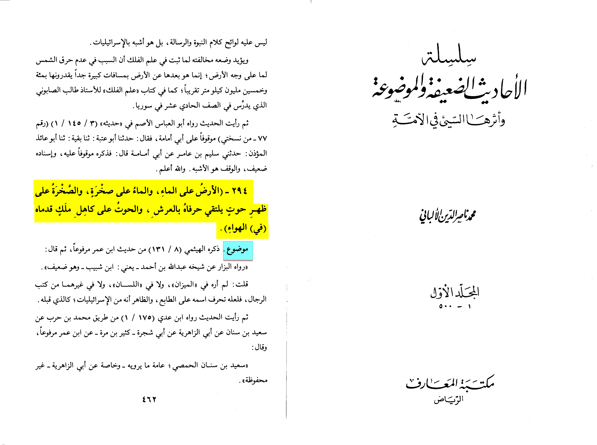

Al-Albani mentions this hadith in silsilat al-ahadith al-da'ifah a book for weak and fabricated reports and shows scholars weakning and saying it
is fabricated and he also took this opinion
source: Silsilat Al-Ahadith Al-Da'ifa vol.I, pp.462 hadith: 294
the hadith is authenticated till ibn abbas but isn't and authority as he got it from jews and Christians but it is not authentic from the prophet
https://m.youtube.com/watch?v=0xEYgtC1OM8&pp=ygUYc2FwaWVuY2UgaW5zdGl0dXRlIHdoYWxl